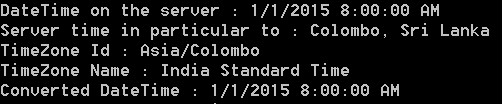
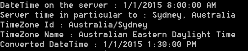
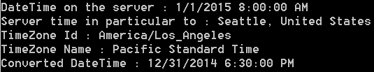

public class GoogleTimeZone
{
private string apiKey;
private GeoLocation location;
private string previousAddress = string.Empty;
public GoogleTimeZone(string apiKey)
{
this.apiKey = apiKey;
}
}
Now let's create following helper methods.
First method is a method to return the Timestamp of a given DateTime.
private long GetUnixTimeStampFromDateTime(DateTime dt)
{
DateTime epochDate = new DateTime(1970, 1, 1, 0, 0, 0, 0, DateTimeKind.Utc);
TimeSpan ts = dt - epochDate;
return (int)ts.TotalSeconds;
}
Then the following method will do the opposite which is converting of Timestamp to DateTime.
private DateTime GetDateTimeFromUnixTimeStamp(double unixTimeStamp)
{
DateTime dt = new DateTime(1970, 1, 1, 0, 0, 0, 0, DateTimeKind.Utc);
dt = dt.AddSeconds(unixTimeStamp);
return dt;
}
Now the following method will return the coordinates for a given location. We can get the geographic coordinates by calling the Google Geocoding API.
private GeoLocation GetCoordinatesByLocationName(string address)
{
string requestUri = string.Format("https://maps.googleapis.com/maps/api/geocode/xml?address={0}&key={1}", Uri.EscapeDataString(address), this.apiKey);<!--CRLF-->
XDocument xdoc = GetXmlResponse(requestUri);
<!--CRLF-->XElement status = xdoc.Element("GeocodeResponse").Element("status");
XElement result = xdoc.Element("GeocodeResponse").Element("result");
XElement locationElement = result.Element("geometry").Element("location");
XElement lat = locationElement.Element("lat");
XElement lng = locationElement.Element("lng");
return new GeoLocation()
{
Latitude = Convert.ToDouble(lat.Value),
Longitude = Convert.ToDouble(lng.Value)
};
}
class GeoLocation
{
public double Latitude { get; set; }
public double Longitude { get; set; }
}
private GoogleTimeZoneResult GetConvertedDateTimeBasedOnAddress(GeoLocation location, long timestamp)
{
string requestUri = string.Format("https://maps.googleapis.com/maps/api/timezone/xml?location={0},{1}×tamp={2}&key={3}", location.Latitude, location.Longitude, timestamp, this.apiKey);<!--CRLF-->
XDocument xdoc = GetXmlResponse(requestUri);
<!--CRLF--> XElement result = xdoc.Element("TimeZoneResponse");
XElement rawOffset = result.Element("raw_offset");
XElement dstOfset = result.Element("dst_offset");
XElement timeZoneId = result.Element("time_zone_id");
XElement timeZoneName = result.Element("time_zone_name");<!--CRLF-->
return new GoogleTimeZoneResult()
{
DateTime = GetDateTimeFromUnixTimeStamp(Convert.ToDouble(timestamp) + Convert.ToDouble(rawOffset.Value) + Convert.ToDouble(dstOfset.Value)),
TimeZoneId = timeZoneId.Value,
TimeZoneName = timeZoneName.Value
};
}<!--CRLF-->
I am grouping up the result to a class named GoogleTimeZoneResult as follows.
public class GoogleTimeZoneResult
{
public DateTime DateTime { get; set; }
public string TimeZoneId { get; set; }
public string TimeZoneName { get; set; }
}
public GoogleTimeZoneResult GetConvertedDateTimeBasedOnAddress(string address, DateTime dateTime)
{
long timestamp = GetUnixTimeStampFromDateTime(TimeZoneInfo.ConvertTimeToUtc(dateTime));
if (previousAddress != address)
{
this.location = GetCoordinatesByLocationName(address);
previousAddress = address;
if (this.location == null)
{
return null;
}
}
<!--CRLF-->return GetConvertedDateTimeBasedOnAddress(this.location, timestamp);
}
static void Main(string[] args)
{
GoogleTimeZone googleTimeZone = new GoogleTimeZone("your api key");<!--CRLF-->
string timeString = "2015-01-01T08:00:00.000+05:30";
DateTime dt = DateTime.Parse(timeString);
//string location = "Colombo, Sri Lanka";
//string location = "Sydney, Australia";
string location = "Seattle, United States";
GoogleTimeZoneResult googleTimeZoneResult = googleTimeZone.GetConvertedDateTimeBasedOnAddress(location, dt);
Console.WriteLine("DateTime on the server : " + dt);
Console.WriteLine("Server time in particular to : " + location);
Console.WriteLine("TimeZone Id : " + googleTimeZoneResult.TimeZoneId);
Console.WriteLine("TimeZone Name : " + googleTimeZoneResult.TimeZoneName);
Console.WriteLine("Converted DateTime : " + googleTimeZoneResult.DateTime);
}<!--CRLF-->
Colombo, Sri Lanka
|  |
| Colombo, Sri Lanka |
Sydney, Australia
|  |
| Sydney, Australia |
Seattle, United States
|  |
| Seattle, United States |
{kind=link}
{kind=link}
{kind=link}